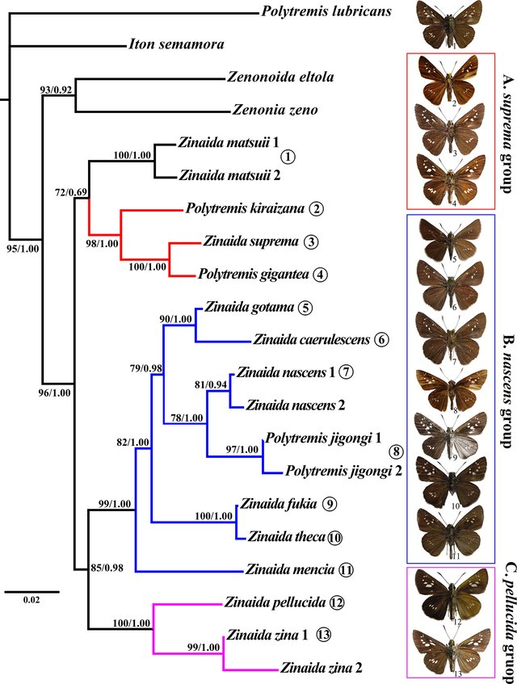

硕士
资源环境楼鳞翅目实验室 |
 |


个人简介 [简历]
我现在是华南农业大学昆虫学系硕士三年级学生，现在主要从事鳞翅目弄蝶科线粒体基因组、分子系统发育、生物分类与进化方面的研究。
我对生物学与信息科学交叉领域非常感兴趣，希望通过计算机平台分析数据精准解决生物问题，或探索开发更适用的生物学工具。
研究经历
国家级大学生创新项目 (项目编号:104892013030), 长江大学. (九千元) 2013.9-2015.6
[ 栖息环境条件对杨扇舟蛾发育和繁殖的影响 ]
昆虫化学生态实验室, 植物科技学院, 华中农业大学. 2015.6-9
发表文章

|
韩雨珂, 黄思遥, 范骁凌*. "福纹尺蛾(Warren, 1893),中国纹尺蛾属一新纪录种（鳞翅目:尺蛾科）" 环境昆虫学报 (已接收), 2018.
[原稿] |
|  | Jing Tang, Zhenfu Huang, Hideyuki Chiba Yuke Han, Xiaoling Fan*. "Systematics of the genus Zinaida Evans, 1937 (Hesperiidae: Hesperiinae: Baorini)" PLoS One, 2017.
[全文] |

|
杨洪桂,韩雨珂, 李传仁*. " 不同叶位杨树叶片对杨扇舟蛾发育和繁殖的影响 " 安徽农业科学 , 2015.
[全文] |
奖项证书
| 国家励志奖学金, 长江大学，2014 |
| 优秀学生干部，长江大学，2012 |
| 优秀共青团员,长江大学， 2013 |
| “雏凤新声”大学生讲坛优秀主讲人，长江大学，2013 |
| 全国计算机等级考试二级C语言证书,长江大学, 2013 |
| 三等学业奖学金,华南农业大学，2017 |
| 三等学业奖学金,华南农业大学，2016 |
学习经历
| 2016 至今 | 硕士研究生 | 昆虫系 华南农业大学 导师 范骁凌副教授 |
| 2011-2015 | 农学学士学位 | 植物保护系 长江大学 导师 李传仁教授 |
爱好
- 手机拍照。获“移动杯”荆州市级手机摄影优秀奖[11/2014]，长江大学校级“心理文化节”微电影赛优秀奖 [16/2013]
- 志愿服务。“青春三下乡”暑期宜昌市远安县支教活动 [7/2013]
- 辩论。 长江大学校辩论队成员，第九届长江大学“清晓杯”辩论赛优秀辩手[05/2013]
- 唱歌。 获长江大学校级“金秋”合唱赛团体一等奖[10/2012]
- 社团活动。担任院学生会社团联合管理部部长[5/2013]
- 游泳。 华南农业大学农学院仰泳比赛第二名 [5/2017], 男女团体混合游泳4*50接力赛第二名 [5/2018]
© Yuke Han | Last updated: 29/08/2018